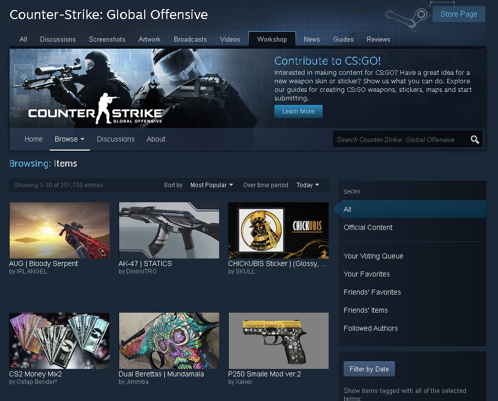
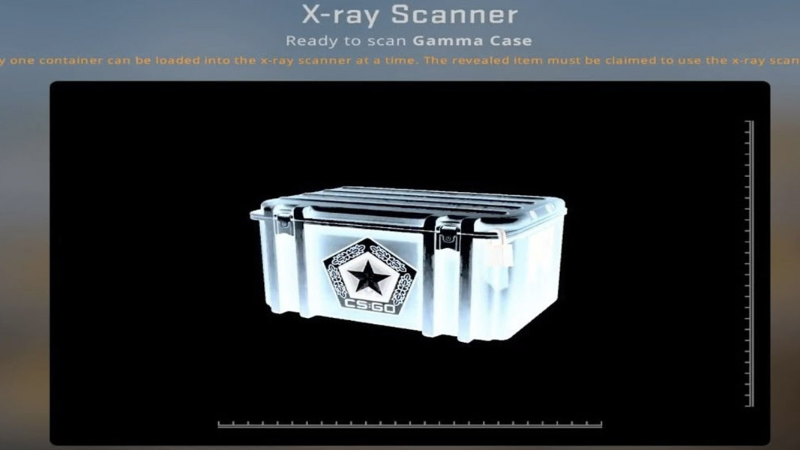
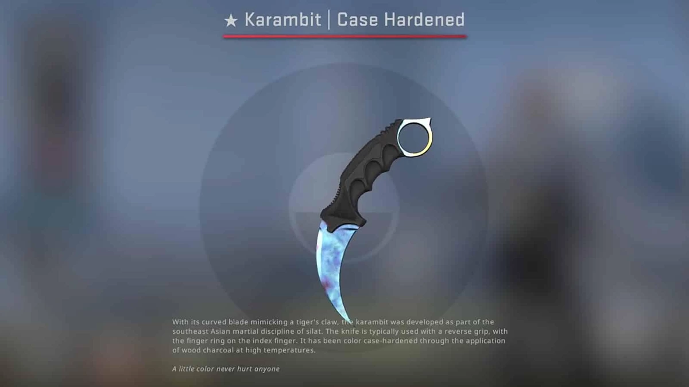
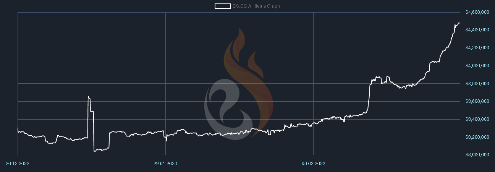
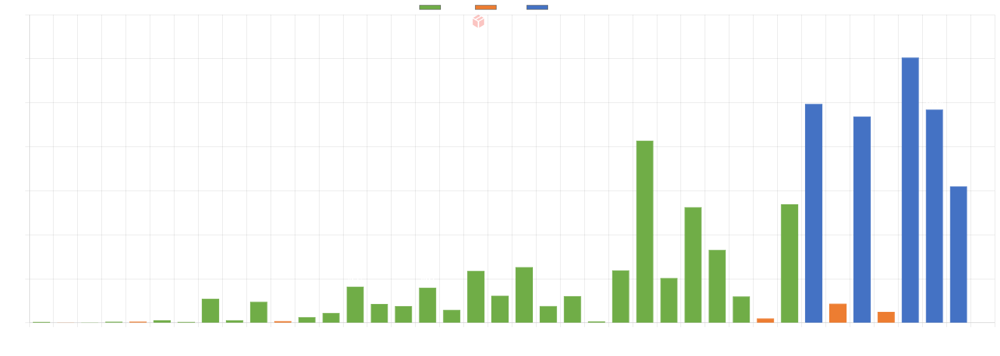

For the past decade, there have been numerous exclusively digital currencies that have come into existence. For the most part, these digital currencies have yet to become of any convenient use for your everyday person. The power of Cryptocurrencies such as bitcoin, is that the currency is decentralized. This means that the ownership of the currency can be passed on to another individual without the need of a third party, such as a bank. That said, cryptocurrencies don't provide much more convenience to the average person in comparison to the payment options that already exist for cash. Simply put, the effort required in order to switch people from cash to Bitcoin, is not proportionate to the amount of convenience it would add to your typical person's life. More recently we have seen the rise and fall in popularity of NFTs. With so many different digital assets on the rise, and none of them seeing practical mainstream use, one could begin to doubt that a fully-digital economy could even exist. There does however exist a purely virtual item-economy that I also consider to be the most successful example of the potential of digital assets, that being the Steam/CS:GO Economy. As a result of Valve's steam trading system, the CS:GO player-base can make thousands of dollars buying and selling video game items, all while still being undeniably profitable for Valve and the artists that create the items. How is it possible that of all things, a decade old game is managing to bring in so much money for its players? This article is an attempt to analyze the CS:GO Economy, what it is, how it works, why it works, and how players are making thousands of dollars trading CS:GO Items.
In April of 2013, Valve introduced an event called "Operation Payback" into Counter-Strike: Global Offensive. It was this update that gave players the ability to own weapon skins, as well as the ability to trade them with other players, and list them on the Steam Community Market. This is a much better deal for the consumer of video game microtransactions, because it allows you to "own" the content you're paying for, while still staying completely virtual. Contrast this to other games that have cosmetic microtransactions similar to Fortnite or Valorant, and you can see the value of Valve's system. I am purely referring to the in-game item shop, and not the battle pass, as that is usually a content-dense product that brings a decent amount of value to you for the money. Although you don't have to gamble in order to receive items in Fortnite, you end up paying upwards of $20 for something that doesn't provide any novel experience, all while never being able to get that money back. In games with similar microtransaction systems/in-game stores to Fortnite, the value you put in for the content compared to the value you get out of the content is not equal. In other words, to the average person, $20 is too much money to be spending on different colored pixels.
The way Valve solves this problem is clever. Their solution, is to let players trade the items. Allowing players the ability to trade items solves many issues of the business model of Fortnite's products:
So if we want a $20 dollar CS:GO weapon skin, you can buy it on the SCM, in which valve will receive about $2 from fees. Obviously, if you buy a $20 Fortnite skin, Epic Games (creator of Fortnite) gets the full $20. This may seem like a big difference, but Valve isn't just monetizing their game through the items, Valve is monetizing the *movement* of the items through fees. This means that Valve can continue to profit off of content no matter how long ago they added it into the game.
Valve further lowers the risk of this business model, by outsourcing all of the weapon case skins and community capsule stickers from its very own community. Users can upload their own weapon finishes and stickers to Steam's Community Workshop, in which Valve selects certain entries to be added into the game. The artists who are selected receive a portion of the SCM fees collected from transactions involving items they created. This way, not only does the community get somewhat of a say in what kind of content CS:GO sees, but also manages to provide talented members of the community an opportunity to profit off of their art. The obvious outcome for Valve, is that they don't have to create some of the content for the game internally, so they end up getting the content without having to pay up-front for it.
Now that we've mentioned the artist, I feel it is necessary to mention that when you buy a skin, you are buying art. Skins and stickers serve no practical advantage to the gameplay of CS:GO, and the creation of the items come entirely from an individual artist's vision/inspiration, rather than a company creating products they think you'll like. In fact, the common dismissal of the idea of buying skins is very similar to that of buying art. "Why should I spend my hard-earned money on something that has no practical use?" This is a wise question to ask yourself if you're smart with you're money. After all, why would you want to buy something you're unsure has any utility to you? Anyone who is smart with their money should be asking that question. That said, if you seriously attempt to answer the question, "why are people their wasting money on pixels?" you begin to realize exactly why this market has much more relevancy and potential than NFTs/cryptocurrency.
So, why are people wasting money on pixels? Simply put, people like art. The very purpose of art is to enhance the everyday experience. CS:GO is a game that consistently sees player numbers peaking well above one million players every other day. Within that one million players, there is sure to be many who are spending multiple hours everyday playing the game. If these items enhance the experience in some way, whether that be through expression of the player, personalization, status, or you just like the way an item looks, then you can reasonably expect that a demand exists for items that fulfill those desires. This is much different than other digital assets, such as cryptocurrency. Most cryptocurrencies are only as valuable as they are utilizable, but for most people, no cryptocurrency has yet to have very much utility in people's everyday life. CS:GO items on the other hand, speak to an innate part of ourselves that everyone embodies, that being their own identity. Everyone has their own style, or their own tastes, and there are many different items that can speak to that style/taste. I don't mean to get too ''philosophical'' here, but if you are seriously considering where the value comes from for these items, this is where, and it seems to be a good enough motivator for the average player to spend their money.
Because Valve's economy is so open to the players, it has allowed many of them the ability to profit massively from it. It is not unusual for players to buy and hold on to items long-term with the goal of reselling them when they've gone up in price. If you're hearing this for the first time you may be somewhat skeptical as to if this is actually profitable, but many players have seen massive profits from their investments. In a way, the CS:GO economy can be reasonably compared to table top games/card games like Pokemon, where the distribution and rarity of cards are similar to the way those systems exist in CS:GO. Also like Pokemon, CS:GO has many players who have massive collections of items. There are reasonable amount of players who have $1,000,000 inventories. Because there is such a market for the game, there is a growing community of players who have become investors in the game's items. There are also many different community-led projects and resources that players use as an essential tool to base their reasoning in when deciding how they're going to invest.
Although Valve has provided the players of CS:GO an open market to buy/sell their items on, they keep a lot of information and data about the game's items from the public. Market data is essential if you're wanting to make a profit trading CS:GO items. But essential data such as weapon skin unboxing odds, sticker capsule unboxing odds, monthly case opening data, sticker application data, etc. has all originally been found/calculated through many clever individuals in the community. This comes with the cost of accuracy, however most sources of information have a good reputation for supplying accurate market data. Thanks to these various information sources, many players use this data to make informed decisions when purchasing items and making investments. There are also many different 3rd party sites created specifically with the purpose of helping players buy, trade, and sell items. There are even players who have developed software for investors, such as casemove, which massively helps with inventory movement and organization. There is a very passionate community of people that are finding demands in the market outside of Valve's IP, and providing genuine solutions. If you're interested in browsing a list of investing resources provided by the community, click here.
Because of the Steam trading system, players have also developed their own markets. When Valve implemented a 7-day trade hold to CS:GO in 2018, it became harder for these sites to process trades. The only exception to this hold is that if a player has received an item through a drop or through trade, that item can be immediately sold on only the SCM until the 7-days have passed and the trade hold is lifted from the item. In order for 3rd party market sites to survive, they needed to be able to work around this trade hold.
The solution to this problem was "peer-to-peer" (P2P) trading. Before P2P trading, 3rd party sites would create bot steam accounts that would act as a middle man between the buy and the seller. Once a seller would trade their item to this bot, the item would go from the player's steam inventory, to the player's inventory on the 3rd party market, which would then allow them to list this item on that site. With the new trade hold, buyers would now have to wait seven days to receive the item, since the item was first traded to the bot, and then a further seven more days to trade the item themselves once it has been received in their inventory. P2P trading eliminates the first trade-hold by removing the need for the item to pass through a bot's inventory first. Through the user's Steam API key, the 3rd party markets can now automate the trade offer process, which connects the seller directly to buyer and vice-versa. This also allows the player to continue using their items until someone buys it, since it doesn't need to be in a bot's inventory. The only downside to this is that it's technically less safe, as you have to give the platform you're trading on your Steam API key in order to perform trading actions, which can be used to control certain functions of your steam account. Although most sites with a reputation won't actually do anything with this API key besides the actions necessary to carry out the site's functions, it is still good to be aware of the potential dangers.
By using 3rd party websites, players are able to buy items for cheaper prices, as the 15% SCM fee is factored out of the price due to the much lower selling fees. If you're interested in browsing the various CS:GO skin sites, check out my site pages that allow you to browse many differen't CS:GO sites, click here.
The economy of CS:GO as a system of microtransactions, is far more robust than any other game with cosmetic microtransactions. By opening up the in-game item system, it has allowed Valve to collaborate with both the player and the artist in a way that appears to benefit everyone in a much more productive way when compared to their competitors. I want to mention however, that without gambling, it could not exist. The item rarities determine the supply and desirability of a lot of the items, while the rarity itself is determined by odds. Without anyone opening cases, there would be no supply of weapon skins, and there wouldn't be any demand for cases. That said, Valve's trading system makes it possible to buy skins directly without having to gamble with the odds of cases/capsules. It is not necessary to participate in the gambling for you to take advantage of Valves system, however without anyone opening cases, the economy couldn't thrive the way it does. Valve has done a decent job of managing this problem in the past, but it is an important ethical dilemma that Valve may have to navigate around again in the future as the topic of gambling fluctuates in controversy.
I say "again," because Valve has already dealt with many gambling controversies, the most notable of which happened in 2016, when Valve was issued a lawsuit for the many 3rd party gambling sites that existed at the time. These sites were malicious in nature, as they were often run/promoted by influencers with an established presence, who would then promote their site on whatever platform their audience is on, without the audience knowing that the influencer was actually apart of the site's creation. This allowed the creator of these sites to tip the odds of the games they were playing in their favor, giving their audience the impression that they were more likely to win than they actually were. What's worse, is that these sites did not have an age restriction, and often the audience of these influencers were largely made up of minors. After the lawsuit against Valve was filed, Valve issued DMCA takedowns to all of the CS:GO Gambling sites. In 2018, there was another round of DMCA takedowns issued for new sites that had been established, followed by a new 7-day trade hold for all player inventories. This rule temporarily destroyed the possibility for gambling sites to exist, while encouraging players to use the SCM.
Not only were Valve still dealing with the legal demands of gambling sites, but in 2018, both Belgium and the Netherland made it illegal for games to contain microtransactions that are considered gambling. Valve's way around this was to add an "X-ray scanner" that allows you to see what you will get in a case before you pay for it. In order to see into another case, you have to pay for the one you're currently viewing first. This system allowed Valve to continue selling CS:GO case keys to their audience in Belgium and the Netherlands, but it does bring into question how long a market like this can last if we're expecting laws on gambling to become stricter.
There are also many, many scams that have taken place within the CS:GO community over it's 10-year lifespan, as player skins are highly desirable. Valve have created many ways to keep its user's safe, but many scams still exist as scammers are constantly finding clever ways around Valve's systems. Because of this, many players that are invested into the economy must keep an eye out for new scams that arise within the community.
There are many collectors of CS:GO items who are willing to pay absurd amounts of money for rare and special items. To put this into perspective, the largest offer ever made for a CS:GO skin was in 2021, in which 1.2 Million Euro was offered for a Factory New Karambit Case Hardened with a rare pattern called a "blue gem". The owner of the Karambit responded "not interested," followed by "1.2 is low." He originally purchased the item in 2016, for over 100,000 dollars.
Esportsfire.com is a community-made website that indexes items, and provides graphs of each index. The graph below shows the market growth of every single item that has been added into the game. What is important to understand about the graph is that it is clearly showing that most of CS:GO's items are increasing in price, and they're increasing rather fast. Since Epsortsfire.com started recording data for this index in December 2022, the market has gone up roughly 40% in value. I am writing this analysis in April of 2023, which is after Valve's announcement of Counter-Strike 2.
Thanks to a community-member made site ( u/Fjedjik on reddit), we have access to case unboxing numbers that update daily. By looking at this data on their site, csgocasetracker.com, you can infer how the demand for each particular case is doing, and you can compare that data to previous months. I am going to use this site to show that demand is dramatically increasing for CS:GO items, as the consumption of cases have increased greatly. At the start of the year, roughly 21.5 million cases were opened in total. In February, there were an additional 5 million more cases unboxed, which was an all-time high in the recorded history of case openings. Last month in March, that record was broken again with a staggering total of 39,472,524 cases opened.
